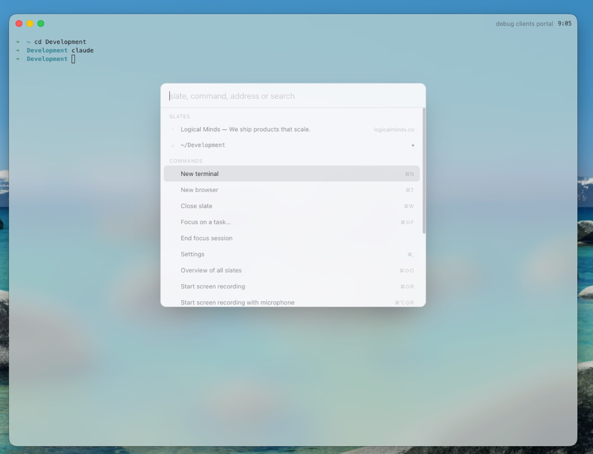
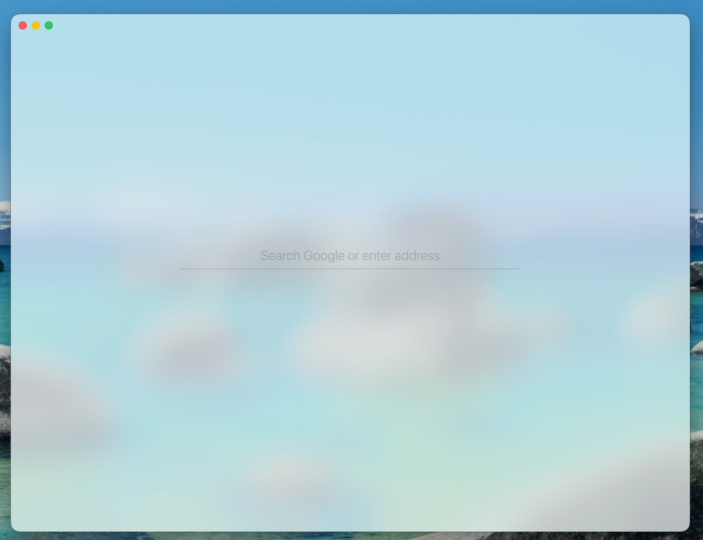

One window
No splits, no panels, no floating anything. You see one slate. Switching is instant; everything else stays out of sight.
A hyper-focus workspace. One window, one slate, nothing else. Every slate is a terminal or a browser, with focus timers and screen recording built in. The UI is ink on glass.


No splits, no panels, no floating anything. You see one slate. Switching is instant; everything else stays out of sight.
Each slate is a full terminal or a full Chromium browser. The two things you actually work in, and nothing in between.
A near-black surface, high-contrast type, one purple cursor. No chrome to look at, so you look at your work.
Name the task, set the minutes, go. A quiet countdown sits in the bar, distracting domains bounce off a blocked page until time is up, and a chime says you're done.
Record a walkthrough without leaving the window. Three-second countdown, optional microphone, straight to mp4 — the frosted glass in the video is the real thing.
⌘K is the whole interface. Slates, commands, search, a live overview of everything open. Tabs stay invisible until you hold ⌃.
git clone https://github.com/logical-minds-co/lm-slate.git && cd lm-slate && npm install && npm run dev
MIT licensed. Built in the open by Logical Minds. macOS, Node 22+.